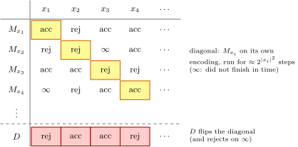

30 \mathbf{P}\subsetneq \mathbf{EXP}
% noend hides “end for”; drop it to keep them
%
In this chapter we focus on how much time Turing machines need to solve problems. Intuitively, with more time, a Turing machine should be able to decide more languages. This section is about making this intuition precise.
Throughout this chapter, Turing machines are multitape.
Definition 30.1 (\mathbf{TIME}(t(n))) Let t\colon \mathbb{N} \to \mathbb{N} with t(n) \geqslant 1 for all n. A TM M runs in time t(n) if, for every input w, M halts on w within t(|w|) steps. A language L is in \mathbf{TIME}(t(n)) if \text{there are a TM } M \text{ and a constant } c > 0 \text{ such that } M \text{ decides } L \text{ and } M \text{ runs in time } c \cdot t(n).
The constant c is chosen together with M, and it is the same for all inputs: it may depend on L, but not on w. Equivalently, L \in \mathbf{TIME}(t(n)) if and only if L is decided by a TM whose running time is \mathcal{O}(t(n)). The constant c makes the definition independent of small details of the machine, such as its tape alphabet. A TM can always be sped up by a constant factor by working with larger tape symbols, each of which encodes several of the old ones.
30.1 \mathbf{P} and \mathbf{EXP}
Definition 30.2 (\mathbf{P} and \mathbf{EXP}) \mathbf{P}= \bigcup_{k \geqslant 1} \mathbf{TIME}(n^k), \qquad \mathbf{EXP}= \bigcup_{k \geqslant 1} \mathbf{TIME}(2^{n^k}).
\mathbf{P} is the standard formalization of “efficiently solvable” (the Cobham–Edmonds thesis). This choice has two good features. First, \mathbf{P} does not depend on the details of the model: single-tape and multitape TMs, RAM machines and all other reasonable deterministic models simulate each other with only a polynomial slowdown. Second, \mathbf{P} is closed under composition, since running one polynomial-time algorithm on the output of another takes polynomial time. In practice, polynomial-time algorithms almost always have small exponents.
Exercise 30.1 (🌱) \mathbf{P}\subseteq \mathbf{EXP}.
The proof of \mathbf{P}\neq \mathbf{EXP} is a diagonalization argument, the same idea as the proof that \mathtt{K} is undecidable (Theorem 26.2). We build a machine D that, on input x, simulates the machine encoded by x and does the opposite. To make this work with time bounds, we need two ingredients:
- D must be able to compute its own time budget, which leads to time-constructible functions;
- we need to know how much it costs to simulate one machine with another.
30.1.1 The cost of universal simulation
Recall that a universal TM U, given \langle M, w \rangle, simulates M on w. We now also care about its speed. U has fixed alphabets and a fixed number of tapes, but M can have arbitrarily many states, tape symbols and tapes. So each step of M costs U several steps: it has to look up the transition of M in the encoding \langle M \rangle, and to manage the tapes of M with its own fixed number of tapes.
Theorem 30.1 (Universal simulation) There is a universal TM U such that, for every TM M, there is a constant c_M with the following property. For every input w, if M halts on w within t steps, then U on \langle M, w \rangle halts within c_M \cdot t^2 steps with the same answer.
The constant c_M depends on M, through its number of states, tapes and tape symbols, but not on w or t. The square comes from simulating the many tapes of M on the fixed number of tapes of U: each simulated step may require a sweep over the part of the tape used so far, which has length at most t. Better simulations exist, with a slowdown of only c_M\, t \log t, but t^2 is enough for our purposes.
The constant c_M causes a problem for diagonalization. When D simulates M on input x = \langle M \rangle, the simulation costs about c_M \cdot t^2 steps, and for a short encoding x, this may be more than the budget of D allows. The solution is to make sure that every machine has encodings that are as long as we want.
We fix an encoding in which every TM has infinitely many encodings. For example, we let any word of the form \langle M \rangle\, \textcolor{darkred}{\mathtt{\$}}\, \textcolor{darkred}{\mathtt{1}}^j, for j \geqslant 0, encode M. Then M has encodings of every sufficiently large length. On a long enough encoding of M, the budget of D grows faster than c_M, so the simulation always finishes in time.
From now on, for a word x, we write M_x for the machine encoded by x. If x is not a valid encoding, M_x is a fixed machine that rejects every input.
30.1.2 Time hierarchy theorem (special case) and \mathbf{P}\neq \mathbf{EXP}
Theorem 30.2 (Time hierarchy theorem (special case)) \mathbf{TIME}(2^n) \subsetneq \mathbf{TIME}(2^{n^2}).

This is a diagonalization argument, the same idea as Cantor’s proof that \mathbb{R} is uncountable (Theorem 3.1) and the proof that \mathtt{K} is undecidable (Theorem 26.2). See Figure 30.1. The machine D differs from every fast machine on at least one input, namely a long enough encoding of that machine. The new ingredient is the clock. In the proof that \mathtt{K} is undecidable, D might wait forever. Here, it cuts off every simulation at time 2^{n^2}, which guarantees that D itself runs in time \mathcal{O}(2^{n^2}).
Theorem 30.3 \mathbf{P}\neq \mathbf{EXP}
As it should be clear, the result from Theorem 30.2 can be strengthened by a more careful analysis. In particular, in the proof of Theorem 30.2 there is one subtle point, in step 1, we wanted to compute \mathrm{bin}(2^{n^2}) to use it as a clock, to do so, we need to compute \mathrm{bin}(2^{n^2}) in time less than \mathcal{O}(2^{n^2}). Which in this case is obvious, we used time \mathcal{O}(n^2). But for a generic function is not.
30.2 Time constructible functions and the time hierarchy theorem
There are total computable functions f s.t. \mathbf{TIME}(f(n))= \mathbf{TIME}(2^{f(n)}), that is even if you are given exponentially more time, you cannot decide any new language. Such functions are pathological examples, and the problem arises when computing f(n) to allow a TM to take much more time than f(n). Avoiding such pathological examples gives rise to the notion of time-constructible functions.
Definition 30.3 (Time-constructible function) A function f\colon \mathbb{N} \to \mathbb{N} is time-constructible if f(n) \geqslant n for all n, and there is a TM that, on input \textcolor{darkred}{\mathtt{1}}^n, writes \mathrm{bin}(f(n)) on its tape and halts within \mathcal{O}(f(n)) steps.
Essentially every function we would use as a time bound is time-constructible. In particular, n, n \log n, n^2, n^k, 2^n, 2^{n^k} and n! are all time-constructible. For example, to compute \mathrm{bin}(n^2) from \textcolor{darkred}{\mathtt{1}}^n, we count the input in binary, which takes \mathcal{O}(n) steps, and multiply in time \mathcal{O}(\log^2 n).
Moreover, if f(n) and g(n) are time-constructible, so are f(n) + g(n), f(n) \cdot g(n), f(g(n)) and 2^{f(n)}.
A notable function which is not time-constructible is \log n, because it is smaller than n, and a machine cannot even read its input in that time. Neither is any function that is not computable. A less obvious example is f(n) = \begin{cases} n^2 & \text{if the } n\text{-th TM halts on the empty input,} \\ n^3 & \text{otherwise.} \end{cases}
This function is perfectly reasonable as a time bound, but computing it would mean solving the halting problem.
This gives the following result.
Theorem 30.4 (Time hierarchy theorem (Hartmanis–Stearns, 1965)) Let g\colon \mathbb{N} \to \mathbb{N} be time-constructible, and let f\colon \mathbb{N} \to \mathbb{N} satisfy f(n) \log f(n) = o\big(g(n)\big). Then \mathbf{TIME}(f(n)) \subsetneq \mathbf{TIME}(g(n)).
This theorem has a lot of important consequences:
- A hierarchy inside \mathbf{P}. For every k \geqslant 1, \mathbf{TIME}(n^k) \subsetneq \mathbf{TIME}(n^{k+1}), since n^k \log n^k = o(n^{k+1}). So some problems can be solved in time n^{100} but not in time n^{99}, and \mathbf{P} has no hardest level.
- Finer gaps. \mathbf{TIME}(n) \subsetneq \mathbf{TIME}(n \log^2 n) and \mathbf{TIME}(n^2) \subsetneq \mathbf{TIME}(n^{2.01}).
- Above \mathbf{EXP}. In the same way, \mathbf{EXP}\subsetneq 2\mathbf{EXP}= \bigcup_k \mathbf{TIME}(2^{2^{n^k}}), and so on. There is an infinite hierarchy of ever larger exponential classes.